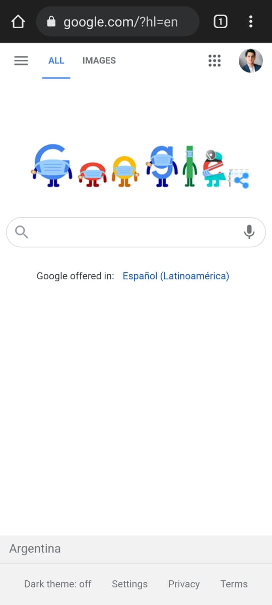
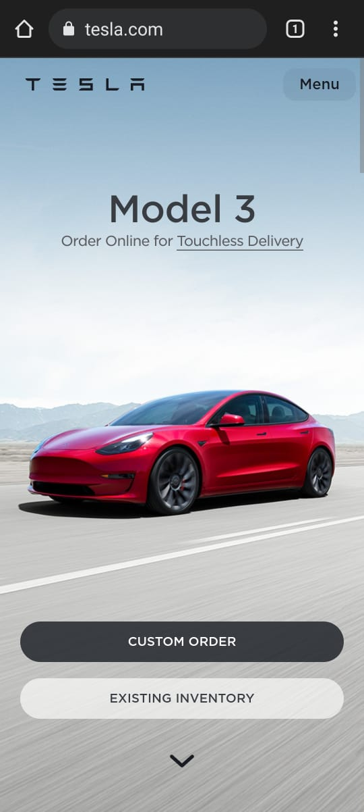

Design Principles Document
Ismael Marin
Visual Hierarchy
The visual hierarchy in Google is reached by making the search bar the most important thing, unequivocally placed over a great amount of white space. The sarch bar is wide and easy to reach. Check it yourself going here.
Hick's Law
Tesla
Hick's Law says that with every additional choice increases the time required to take a decision. In the following site, Tesla invites to pick one of two options for buying a car. Take a look at the page from here.
White Space and Clean Design
SpaceX
There is no doubt that SpaceX likes minimalistical expresion. In their website they make this clear: much white space to focus on the product. A minimum of text for descriptions. Visit their page using this link: here.